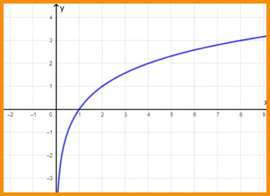

.png)
LOGARITMO
A função logarítmica de base a é definida como f (x) = loga x, com a real,
positivo e a ≠ 1. A função inversa da função logarítmica é a função exponencial.
O logaritmo de um número é definido como o expoente ao qual se deve
elevar a base a para obter o número x, ou seja:
GRÁFICO
De uma forma geral, o gráfico da função y = loga x está localizado no I e IV quadrantes, pois a função só é definida para x > 0.
Além disso, a curva da função logarítmica não toca o eixo y e corta o eixo x no ponto de abscissa igual a 1, pois y = loga1 = 0, para qualquer valor de a.
Abaixo, apresentamos o esboço do gráfico da função logarítmica.
FUNÇÃO CRESCENTE E DECRESCENTE
Uma função logarítmica será crescente quando a base a for maior que 1, ou
seja, x1 < x2 ⇔ loga x1 < loga x2.
Por exemplo, a função f (x) = log2 x é uma função crescente, pois a base é
igual a 2.
Para verificar que essa função é crescente, atribuímos valores para x na fun-
ção e calculamos a sua imagem. Os valores encontrados estão na tabela abaixo.
Observando a tabela, notamos que quando o valor de x aumenta, a sua imagem também aumenta. Abaixo, representamos o gráfico desta função.
Por sua vez, as funções cujas bases são valores maiores que zero e menores que 1 são decrescentes,
ou seja, x1 < x2 ⇔ loga x1 > loga x2.
Por exemplo, é uma função decrescente, pois a base é igual a x .
Calculamos a imagem de alguns valores de x desta função e o resultado e encontra-se na tabela ao lado.
Notamos que, enquanto os valores de x aumentam, os valores das respectivas imagens diminuem. Desta forma, constatamos que a função é uma função decrescente.
Com os valores encontrados na tabela, traçamos o gráfico dessa função. Note que quanto menor o valor de x, mais perto do zero a curva logarítmica fica, sem contudo, cortar o eixo y.
DOMÍNIO
O domínio de uma função representa os valores de x onde a função é definida. No caso da função logarítmica, devemos levar em consideração as condições de existência do logaritmo.
Portanto, o logaritmando deve ser positivo e a base também deve ser positiva e diferente de 1.
Para melhorar seus estudos...
Matemática pode ser um conteúdo difícil. Para aumentar seu aprendizado, acesse ao mapa mental e a playlist de vídeo aulas sobre este assunto:
Mapa mental playlist de videoaulas